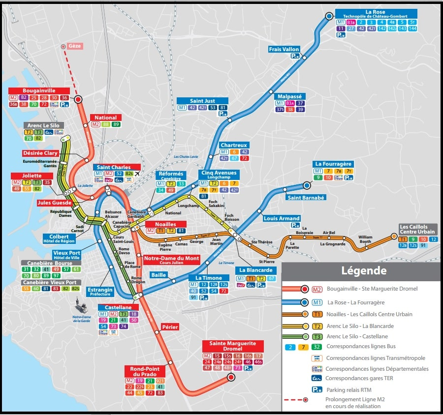
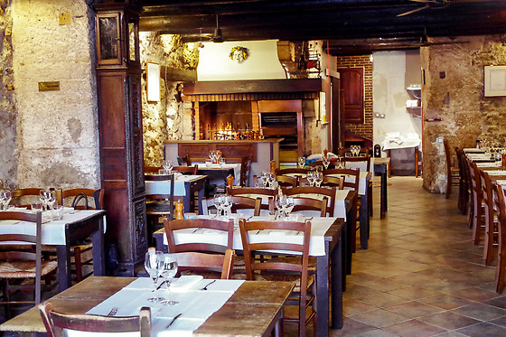
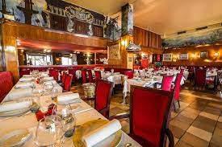
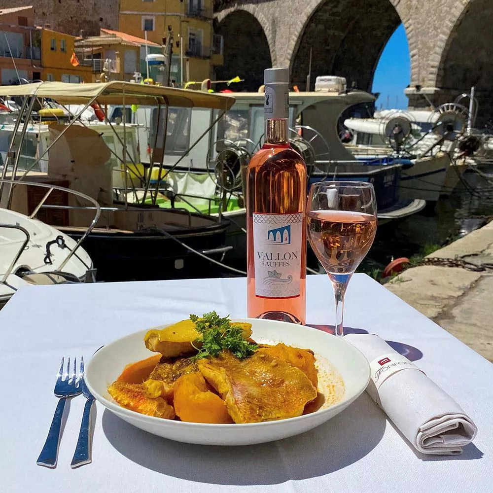
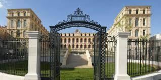
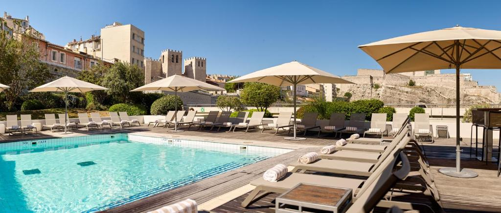
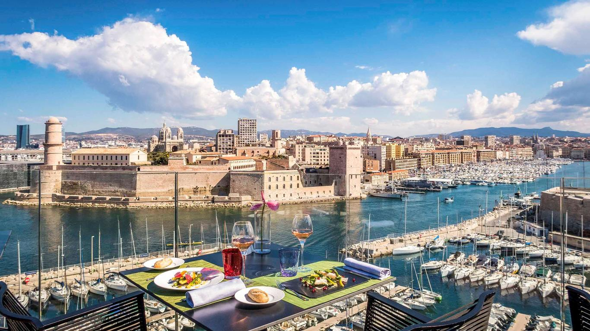

Accessibility of public transportation in Marseille is generally good, with a well-developed network of buses, metro, and tramways that serve various parts of the city. The city's public transportation system is designed to be inclusive, providing facilities for individuals with reduced mobility.
The cost of a public transportation ticket in Marseille can vary depending on the mode of transport and the number of zones traveled. Typically, the pricing is reasonable, and various ticket options, such as single-ride tickets and multi-day passes, are available to cater to different travel needs.
In terms of frequency, Marseille's public transport system offers regular and reliable services. Buses, metro, and trams operate frequently, especially during peak hours, ensuring that commuters have convenient options for reaching their destinations. The frequency of services may vary depending on the specific line and the time of day.
Overall, Marseille's public transportation system strives to provide an accessible and efficient means of travel for residents and visitors alike, contributing to the city's connectivity and mobility.
Dining at La Côte de Bœuf in Marseille promises a culinary delight. Renowned for its exceptional meat cuts, this restaurant offers a memorable experience for those seeking exquisite French cuisine. With a warm and inviting ambiance, La Côte de Bœuf is a go-to destination for meat enthusiasts, providing a perfect blend of flavorful dishes and an authentic, welcoming atmosphere. Indulge in the finest meats and savor the local culinary artistry at La Côte de Bœuf in Marseille.
Dining at Le Miramar in Marseille offers a captivating culinary experience set against the picturesque backdrop of the Vieux-Port. Renowned for its seafood and Mediterranean-inspired cuisine, Le Miramar showcases the freshest catches in a sophisticated yet relaxed atmosphere. With a menu that reflects the rich maritime flavors of the region, patrons can indulge in a gastronomic journey, savoring expertly prepared dishes while enjoying panoramic views of the Old Port. Le Miramar is a quintessential destination for those seeking a delightful blend of culinary excellence and the charm of Marseille's coastal ambiance;
Dining at Chez Fonfon in Marseille promises an authentic Provençal experience with a touch of maritime charm. Situated in the heart of the iconic Vallon des Auffes, this renowned restaurant specializes in traditional Mediterranean cuisine, featuring fresh seafood and local flavors. With a warm and welcoming ambiance, Chez Fonfon invites patrons to savor delectable dishes in a setting that reflects the coastal heritage of Marseille. The combination of a diverse menu, impeccable service, and a scenic location makes Chez Fonfon a must-visit for those seeking a true taste of Provence along the Mediterranean shores.
Choosing to stay at the InterContinental Marseille - Hôtel Dieu offers a captivating fusion of history, luxury, and unparalleled vistas. Nestled within the meticulously restored 18th-century Hôtel Dieu, this esteemed establishment beckons guests into the opulent embrace of Marseille's cultural heritage. The hotel's architectural grandeur transports visitors to a bygone era, while its modern amenities and lavish accommodations ensure a comfortable and indulgent retreat. Throughout the hotel, panoramic views of the Vieux-Port and iconic city landmarks provide a stunning backdrop, creating an immersive and enchanting atmosphere. Culinary delights await at the on-site restaurants, where a symphony of local and international flavors unfolds in a sophisticated ambiance. Centrally located, the hotel serves as a gateway to Marseille's vibrant culture, historic treasures, and lively neighborhoods. Beyond its walls, guests can explore the city's charm, returning to the hotel for a rejuvenating experience at the spa and wellness facilities. InterContinental Marseille - Hôtel Dieu is not just a place to stay; it is an invitation to luxuriate in a harmonious blend of history, modern elegance, and unmatched hospitality, creating enduring memories in the heart of Marseille.
Opting for a stay at the Radisson Blu Hotel in Marseille Vieux Port promises an enchanting blend of modern sophistication and breathtaking waterfront allure. Situated along the iconic Vieux-Port, this distinguished hotel captivates guests with its contemporary design and panoramic views of the Mediterranean Sea. The sleek and stylish accommodations reflect a commitment to comfort, offering a luxurious retreat after a day of exploring the vibrant city. With a prime location, the hotel serves as a gateway to Marseille's cultural treasures and dynamic neighborhoods. The Radisson Blu Hotel, Marseille Vieux Port, is renowned for its culinary excellence, where guests can savor a gastronomic journey amidst chic surroundings. The on-site restaurants offer a diverse menu that celebrates local Provencal flavors and international culinary artistry. From the hotel's vantage point, guests can easily access Marseille's historic sites, cultural attractions, and the bustling Old Port. The rooftop terrace, with its stunning views, provides a perfect spot to unwind and take in the beauty of the surroundings. With a commitment to exceptional service and a contemporary ambiance, the Radisson Blu Hotel, Marseille Vieux Port, invites guests to immerse themselves in a luxurious experience where modernity meets the timeless charm of the Mediterranean.
Choosing the Sofitel Marseille Vieux-Port for your stay ensures a seamless blend of French sophistication, luxury, and captivating views of the historic Vieux-Port. Nestled in the heart of Marseille, this prestigious hotel offers an elegant retreat with well-appointed rooms and chic dining options that celebrate French and Mediterranean flavors. Its strategic location allows easy exploration of cultural attractions, historic landmarks, and vibrant neighborhoods, while the rooftop terrace provides a perfect vantage point for coastal vistas. With a commitment to excellence, Sofitel Marseille Vieux-Port invites guests to experience the epitome of French hospitality in a setting that harmoniously marries tradition with contemporary luxury.
